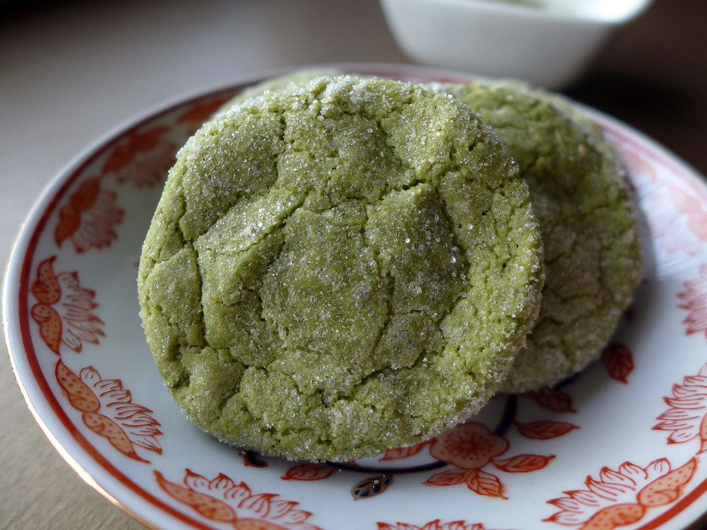

Matcha Cookies
Home

Description
Matcha cookies combine sweet, sugary dough with a fragrant matcha profile and gooey white chocolate chips in each bite.
They are not much different from a regular chocolate chip cookie other than the addition of matcha and substitution
of chocolate to white chocolate. These cookies will also pair well with milk, as matcha lattes have been a popular drink
for a while now.
Ingredients:
- Matcha powder
- Butter
- Granulated Sugar
- Brown sugar
- Vanilla Extract
- Egg yolk
- All-purpose Flour
- White Chocolate Chips
- Baking Soda
- Salt
Instructions:
- Preheat the oven to 350 fahrenheit.
- Line a baking sheet with parchment paper.
- Mix the wet ingredients: butter, brown sugar, and granulated sugar together until combined then add in the egg yolk and vanilla.
- Mix in the dry ingredients: flour, matcha powder, baking soda, and salt. avoid overmixing it
- Fold in the chocolate chips. if desired
- Freeze the dough for about 5 minutes and roll into separate balls on the baking sheet. this will help shapen the dough
- Bake for about 9-12 minutes and let them cool once done.